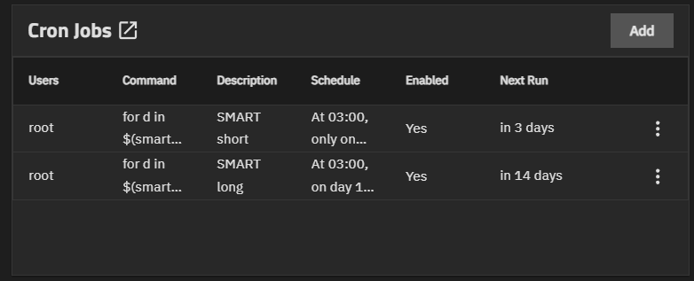

No post anterior contei como cheguei na revisão do homelab e como dividi o trabalho em fases antes da observabilidade. Agora começam as mudanças, e começo pelos discos, que foi onde achei mais coisa funcionando por sorte.
# Pools em stripe e nenhum aviso
Meu NAS tem dois pools ZFS em stripe, com dois discos cada. Sem redundância, por escolha: prefiro o espaço. O preço é que um disco que morre leva o pool inteiro, e eu não tinha nada me avisando. Sem scrub com alerta e sem SMART agendado, a primeira notícia de um disco ruim seria o pool sumir.
O primeiro ajuste foi o mais simples. Criei um bot no Telegram e liguei como serviço de alerta no próprio TrueNAS. Com o nível em Warning, ele cobre falha de replicação, pool degradado, scrub com erro e disco enchendo.
Pros testes de SMART, a minha versão do TrueNAS não mostra o card de Periodic S.M.A.R.T. Tests, então virou Cron Job como root, um short toda quarta e um long todo dia 15:
for d in $(smartctl --scan | awk '{print $1}'); do smartctl -t short $d; done
O cron só dispara o teste, ninguém olha o resultado. Pra isso instalei o Scrutiny, que guarda o histórico de cada disco e manda notificação no mesmo Telegram.
# O SSD de boot que nasceu "Failed"
Na primeira coleta, o Scrutiny marcou o NVMe de boot do TrueNAS como Failed, com 121 Media Errors. São erros de integridade que o controlador não conseguiu corrigir, então não era alarme falso. Levei um susto.
O smartctl -a contou uma história mais calma:
| Atributo | Valor |
|---|---|
| Critical Warning | 0x00 |
| Available Spare | 100% |
| Percentage Used | 6% |
| Power On Hours | 12.867 |
| Unsafe Shutdowns | 53 |
| Error Information Log | No Errors Logged |
| Self-test short e long | Completed without error |
Desgaste de 6%, nenhum bloco reserva usado, log de erros vazio e os dois testes passando. Tudo indica que os erros são antigos, provavelmente da vida anterior desse SSD, que é usado. A urgência caiu de "trocar já" pra "acompanhar". O contador nunca volta a zero, então o Scrutiny vai mostrar Failed pra sempre. O que eu preciso olhar é se o número sobe.
Anotei os valores de hoje pra comparar daqui a uma ou duas semanas e fiz backup da config do TrueNAS fora do NAS. Se esse disco morrer, os dados continuam nos pools, mas o NAS para, e com ele o NFS do cluster. Com o arquivo de config, é reinstalar e subir de volta.
# O disco que só estava certo por acaso
Esse aqui me incomodou mais. No playbook do k3s-node, o disco de mídia do Jellyfin estava assim:
- name: Mount media SSD persistently
ansible.posix.mount:
path: /mnt/media-ssd
src: /dev/sda1Só que na VM o sda é o disco do SO. A mídia é o sdb. Eu já tinha caído nisso duas vezes e corrigido o fstab na mão, sem levar a correção pro código. Se eu rodasse esse playbook de novo, ele reescreveria o fstab, e no próximo reboot /mnt/media-ssd passaria a ser a própria raiz do sistema. O Linux monta o mesmo ext4 duas vezes sem reclamar, e o Jellyfin ia escanear o / inteiro.
O código agora usa o caminho /dev/disk/by-id/, que vem do slot da VM e não muda quando sda e sdb trocam de ordem. O mount usa o UUID, lido na hora com blkid. Se eu fixasse o UUID no código, recriar a VM quebraria tudo, porque o disco novo teria outro.
Faltava um segundo risco: se o SSD não montar, o Jellyfin escreve na pasta vazia que fica embaixo do ponto de montagem e enche o disco do SO sem ninguém perceber. Dá pra resolver com chattr +i nessa pasta, porque aí a escrita falha. O problema é que ela está escondida pelo próprio mount, e eu não queria desmontar nada. O truque foi um bind mount do /, que mostra o que tem por baixo:
tmp=$(mktemp -d)
mount --bind / "$tmp"
trap 'umount "$tmp"; rmdir "$tmp"' EXIT
chattr +i "$tmp/mnt/media-ssd"Sem desmontar nada e sem parar o Jellyfin. A versão no playbook também confere com lsattr se a flag já está lá.
A revisão também sugeria um drop-in no k3s com RequiresMountsFor=/mnt/media-ssd, e acabei descartando. Sem nofail no fstab, a falta do SSD no boot já joga a VM em modo de emergência, então ali ele não acrescenta nada. Depois do boot, uma falha nesse disco derrubaria o k3s inteiro, Immich e Nextcloud juntos, por causa de um disco com filme. Não valia a troca.
Rodar de novo é o teste
Fui rodando com --check --diff antes de aplicar, e isso pegou dois problemas.
O primeiro veio já na simulação: a task do ponto de montagem ia mudar a permissão de 775 pra 755. É que /mnt/media-ssd são duas pastas no mesmo caminho, a vazia do SO e a raiz do SSD por cima, e a task via a de cima. O mode: '0755' do código não batia com o que eu tinha deixado na máquina. Mais um drift. Tirei o mode, já que a task só precisa garantir que a pasta existe.
O segundo foi depois de aplicar. A segunda execução tinha que dar changed=0 e deu changed=1. O bug estava nessa linha, que o Claude escreveu e eu aprovei sem perceber:
changed_when: "'changed' in media_ssd_immutable.stdout"O script imprime changed ou unchanged, e unchanged contém changed. A VM estava certa, só o relatório mentia. Um changed que aparece sempre não quebra nada hoje, mas me ensinaria a ignorar esse aviso. Trocar por == 'changed' resolveu, e a execução seguinte deu changed=0.
# 48GB presos no thin pool
Os dois discos da VM ficam em LVM-Thin, com discard=ignore. Eu li isso errado na primeira vez: achei que a VM não sabia o que tinha sido apagado e que a gente ia corrigir só o número mostrado. É o contrário. A VM sabe, e o df está certo. Quem não fica sabendo é o Proxmox, porque o aviso de "esses blocos estão livres" morre no caminho. O bloco continua ocupado no SSD físico.
No fluxo do Jellyfin, de baixar, assistir e apagar, o pool só cresce. Quando chega em 100%, a VM trava com erro de I/O, mesmo achando que tem espaço de sobra.
O ajuste no Terraform é pequeno:
disk {
interface = "scsi1"
size = 220
datastore_id = "media-ssd"
+ discard = "on"
+ ssd = true
}O apply não bastou, e isso eu não sabia. O Proxmox gravou a configuração nova e a VM seguiu rodando com a antiga:
cur scsi1: media-ssd:vm-100-disk-0,...,discard=ignore,...,ssd=0
new scsi1: media-ssd:vm-100-disk-0,...,discard=on,...,ssd=1Um reboot de dentro da VM também não resolve, porque o processo do QEMU continua o mesmo. Precisa desligar e ligar pelo host:
qm shutdown 100 --timeout 180 && qm start 100Depois disso, o discard só cuida do que for apagado dali pra frente. Na VM, o / já monta com discard, mas a mídia depende do fstrim.timer semanal, que deixei garantido no Ansible. Pro que já estava preso, rodei fstrim -av na VM e pct fstrim 120 no host pra LXC de monitoramento, já que contêiner não recebe discard como VM. O resultado no lvs:
| Volume | Antes | Depois | Devolvido |
|---|---|---|---|
| SO da VM (50G) | 98,73% | 56,39% | ~21GB |
| Mídia da VM (220G) | 19,95% | 8,07% | ~26GB |
| LXC de monitoramento (20G) | 31,07% | 25,83% | ~1GB |
Quase 48GB, sem sintoma nenhum até eu olhar. O fstrim chegou a dizer "202,2 GiB trimmed" na mídia, mas esse número é todo o espaço livre avisado, inclusive o que nunca foi usado. O ganho de verdade é a queda no lvs.
Nessa saída apareceu outra coisa: o disco virtual da mídia tem 220G e o pool que hospeda ele tem 218,97G. Se eu encher a mídia de verdade, o pool acaba antes do sistema de arquivos. Anotei pra não passar de uns 200G.
# Quanto disco o SO precisa
O disco do SO estava em 59%, e nove dias antes estava em 49%. Minha ideia era aumentar bastante, já que os dados moram no TrueNAS e esse disco seria só de sistema. Fui medir antes:
| O que ocupa | Tamanho |
|---|---|
| Imagens de container | 19G |
| Logs do journal | 3,9G |
| Dados dos pods | 2,9G |
| Bancos do Immich e do Nextcloud | 1,6G |
Não era só sistema. Os bancos moram aqui, e as imagens são o que mais cresce. Fiquei em 100G, e não em 150G, por dois motivos. O k3s só limpa imagem antiga perto de 85% de uso, então um disco maior acumula mais lixo antes de limpar. E 150G faria a soma dos discos virtuais passar do tamanho do pool. O Proxmox só cresce disco, nunca reduz, e crescer de novo leva poucos minutos, então não tem por que exagerar agora.
Crescer são três camadas, e cada uma tem o seu comando:
terraform apply # disco virtual
sudo growpart /dev/sda 1 # partição
sudo resize2fs /dev/sda1 # sistema de arquivosAntes de rodar, o growpart --dry-run mostrou que o início da partição e o UUID não mudavam. Foi tudo com a VM ligada, sem queda de serviço, e o / foi de 59% pra 30%.
# O que ficou aberto
Ainda preciso comparar os contadores do SSD de boot com os valores anotados, agendar o pct fstrim da LXC e mover a biblioteca do Jellyfin pra uma subpasta, porque hoje ela aponta pra raiz do volume.
💡 O que ficou de aprendizado
Sobre SMART: teste que ninguém olha não avisa nada, e um Failed sozinho não é diagnóstico. Os 121 Media Errors me assustaram, mas o que vou acompanhar é se o contador sobe.
Sobre drift: correção feita na mão e não levada pro código continua sendo um problema, só que escondido. O fstab estava certo na máquina e errado no playbook, e a próxima execução desfaria o conserto.
Sobre idempotência: --check --diff antes e uma segunda execução depois pegam coisas diferentes. A simulação achou a permissão que ia mudar, e a segunda execução achou o changed_when que mentia.
Sobre thin provisioning: o df da VM não diz quanto o pool está ocupando, quem mostra isso é o lvs. E o discard novo só valeu depois de desligar e ligar a VM pelo host.
Sobre dimensionar disco: medir antes mudou a decisão. Eu achava que o disco do SO era só de sistema, mas os bancos moram ali. Como dá pra crescer depois e não dá pra reduzir, fiquei com o menor tamanho que resolvia.